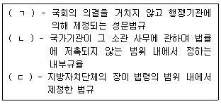
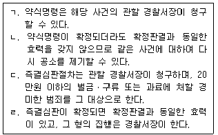
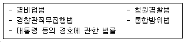

경비지도사-1차(법학개론,민간경비론) (2013-11-16 기출문제)
1과목: 법학개론
1. 다음 ( )에 들어갈 법원(法源)이 바르게 연결된 것은?

- ㄱ: 명령, ㄴ: 조례, ㄷ: 규칙
- ㄱ: 명령, ㄴ: 규칙, ㄷ: 규칙
- ㄱ: 조례, ㄴ: 명령, ㄷ: 조례
- ㄱ: 규칙, ㄴ: 규칙, ㄷ: 명령
(정답률: 52%)

2. 사권(私權)에 관한 설명으로 옳지 않은 것은?
- 물권적 청구권은 지배권이다.
- 위자료청구권은 재산권이다.
- 저당권은 원칙적으로 양도할 수 있다.
- 무권대리행위에 대한 본인의 추인권은 형성권이다.
(정답률: 18%)
3. 한국인 甲과 미국인 乙이 캘리포니아 주에 소재한 X건물을 매매하는 경우, 미국법에 따라 소유권이전이 이루어진다고 규정한 국내법은?
- 국제법
- 국제사법
- 국제민사사법공조법
- 국내에서 비준ㆍ공포된 국제물품매매계약에 관한 국제연합협약
(정답률: 52%)
4. ‘추정’과 ‘간주’에 관한 설명으로 옳은 것은?
- 추정은 입증부담을 완화하기 위하여 불명확한 사실에 대하여 일정한 법적 효과를 부여하는 것이다.
- 추정은 반증으로 그 효과를 번복할 수 없다.
- 2인 이상이 동일한 위난으로 사망한 경우에는 동시에 사망한 것으로 간주한다.
- 가정법원의 선고에 의해 사망한 것으로 간주되는 사법상의 효과는 반증에 의해 번복될 수 있다.
(정답률: 64%)
5. 강행규정에 해당하지 않는 것은?
- 횡령죄에 관한 형법의 규정
- 위험부담에 관한 민법의 규정
- 국회의 권한에 관한 헌법의 규정
- 항소기간에 관한 형사소송법의 규정
(정답률: 60%)
6. 권리에 속하지 않는 것은?
- 임차인의 임차권
- 자(子)의 부(父)에 대한 부양청구권
- 토지소유자의 토지에 대한 처분권
- 건물 매도인의 대금지급청구권
(정답률: 38%)
7. 공법에 속하지 않는 것은?
- 형사소송법
- 친족상속법
- 행정심판법
- 민사소송법
(정답률: 48%)
8. “사람을 살해한 자는 사형ㆍ무기 또는 5년 이상의 징역에 처한다.”는 형법의 규정이 지니는 규범적 성격이 아닌 것은?
- 조직규범
- 행위규범
- 강제규범
- 재판규범
(정답률: 50%)
9. 용익물권이 아닌 것은?
- 지역권
- 임차권
- 구분지상권
- 분묘기지권
(정답률: 36%)
10. 우리나라 헌법의 기본원리로 옳지 않은 것은?
- 자주통일주의
- 복지국가주의
- 국민주권주의
- 기본권존중주의
(정답률: 43%)
11. 청구권적 기본권에 속하지 않는 것은?
- 참정권
- 청원권
- 재판청구권
- 국가배상청구권
(정답률: 44%)
12. 다음 중 그 내용을 제한할 수 없는 절대적 기본권은?
- 교수내용의 자유
- 양심형성의 자유
- 예술표현의 자유
- 종교적 양심에 따른 집총거부의 자유
(정답률: 49%)
13. 국회에 관한 설명으로 옳지 않은 것은?
- 국회의원이 회기 전에 현행범으로 체포되어 구금된 경우라도 국회의 요구가 있으면 회기 중에 석방하여야 한다.
- 재적의원 과반수의 출석과 출석의원 과반수의 찬성으로 의결하는 경우에 가부동수이면 부결된 것으로 본다.
- 출석의원 과반수의 찬성이 있으면 국회의 회의를 공개하지 않을 수 있다.
- 국회는 선전포고에 대한 동의권을 가진다.
(정답률: 52%)
14. 대통령의 권한에 속하지 않는 것은?
- 헌법개정제안권
- 긴급재정경제처분권
- 임시국회소집요구권
- 위헌법률심판제청권
(정답률: 37%)
15. 검사가 재량에 의해 불기소처분을 할 수 있다는 원칙은?
- 국가소추주의
- 기소독점주의
- 기소편의주의
- 기소변경주의
(정답률: 42%)
16. 피고인이 공판정에서 자백한 사건에 대하여 증거능력의 제한을 완화하는 등의 방법으로 심리를 신속하게 진행하기 위하여 인정되는 형사소송법상의 절차는?
- 공판준비절차
- 간이공판절차
- 증거개시절차
- 국민참여재판절차
(정답률: 56%)
17. 특별형사소송절차에 관한 설명으로 옳은 것을 모두 고른 것은?

- ㄱ, ㄴ
- ㄱ, ㄹ
- ㄴ, ㄷ
- ㄷ, ㄹ
(정답률: 50%)
18. 형사소송법상 증거의 일반원칙에 관한 설명으로 옳지 않은 것은?
- 사실의 인정은 증거에 의하여야 한다.
- 피고인의 자백이 그 피고인에게 불이익한 유일의 증거인 때에는 이를 유죄의 증거로 하지 못한다.
- 피고인의 자백이 임의로 진술한 것이 아니라고 의심할만한 이유가 있을 때에는 유죄의 증거로 할 수 없다.
- 피의자에 대하여 진술거부권을 고지하지 않은 상태에서 수집한 증거의 증거능력은 인정된다.
(정답률: 53%)
19. 형사소송법상 상소(上訴)에 관한 설명으로 옳지 않은 것은?
- 항소장은 항소법원에 제출하여야 한다.
- 상소는 재판의 일부에 대하여 할 수 있다.
- 항소의 제기기간은 7일로 한다.
- 피고인의 법정대리인은 피고인을 위하여 상소할 수 있다.
(정답률: 43%)
20. 의사 甲이 그 사정을 전혀 알지 못하는 간호사를 이용하여 환자 乙에게 치료약 대신 독극물을 복용하게 하여 乙이 사망에 이른 경우에 甲의 범죄 형태는?
- 교사범
- 단독정범
- 공동정범
- 간접정범
(정답률: 50%)
21. 공무집행을 방해할 의사로 공무집행 중인 공무원을 상해한 경우는 다음 중 어느 것에 해당하는가?
- 법조경합
- 포괄적 일죄
- 상상적 경합
- 실체적 경합
(정답률: 39%)
22. 다음 설명 중 옳지 않은 것은?
- 동거하는 친족만을 사용하는 사업장은 근로기준법의 적용을 받지 않는다.
- 단체협약에 특별한 규정이 있는 경우에는 임금의 일부를 공제할 수 있다.
- 사용자와 근로자의 합의에 의하여 1주 간에 15시간을 한도로 법정근로시간을 연장할 수 있다.
- 사용자는 1년간 80퍼센트 이상 출근한 근로자에게 15일의 유급휴가를 주어야 한다.
(정답률: 54%)
23. 사회보장법의 분야에 해당하는 법률은?
- 근로기준법
- 아동복지법
- 소비자기본법
- 독점규제 및 공정거래에 관한 법률
(정답률: 34%)
24. 사회보장기본법상 국가와 지방자치단체의 책임 하에 생활유지능력이 없거나 생활이 어려운 국민의 최저생활을 보장하고 자립을 지원하는 제도는?
- 사회보장
- 사회보험
- 공공부조
- 사회서비스
(정답률: 53%)
25. 근로기준법에 관한 설명으로 옳지 않은 것은?
- 근로계약이란 근로자가 사용자에게 근로를 제공하고 사용자는 이에 대하여 임금을 지급하는 것을 목적으로 체결된 계약을 말한다.
- 근로기준법에서 정하는 기준에 미치지 못하는 근로조건을 정한 근로계약은 그 근로계약 전체를 무효로 한다.
- 사용자는 근로계약을 체결할 때에 근로자에게 소정근로시간을 명시하여야 한다.
- 사용자가 경영상 이유에 의하여 근로자를 해고하려면 긴박한 경영상의 필요가 있어야 한다.
(정답률: 45%)
26. 주식회사의 이사에 관한 설명으로 옳지 않은 것은?
- 이사는 주주총회에서 선임한다.
- 이사가 제3자의 계산으로 회사와 거래를 하기 위하여는 미리 이사회의 승인을 받아야 한다.
- 이사가 임무를 수행함에 있어서 법령을 위반한 행위를 한 때에는 경영판단의 원칙이 적용된다.
- 이사는 퇴임 후에도 직무상 알게 된 회사의 영업상 비밀을 누설하여서는 아니된다.
(정답률: 49%)
27. 주식회사에 관한 설명으로 옳지 않은 것은?
- 주식회사는 무액면주식을 발행할 수 있다.
- 감사는 이사회에 출석할 수 없다.
- 집행임원은 이사회가 선임한다.
- 주주의 책임은 그가 가진 주식의 인수가액을 한도로 한다.
(정답률: 46%)
28. 인보험에서 피보험자란?
- 보험사고가 발생한 때에 보험금액의 지급을 받을 자를 말한다.
- 보험자의 상대방으로서 자기명의로 보험계약을 체결하는 자를 말한다.
- 자신의 생명이나 신체를 보험에 붙인 자연인을 말한다.
- 보험사고가 발생한 때에 보험금액을 지급할 의무를 부담하는 자를 말한다.
(정답률: 41%)
29. 계약 전의 어느 시기(時期)를 보험기간의 시기(始期)로 한 보험계약은?
- 소급보험
- 일부보험
- 단체보험
- 중복보험
(정답률: 56%)
30. 법령에 의하여 부여된 작위의무, 수인의무, 급부의무를 특정한 경우에 해제하여 주는 행정행위는?
- 허가
- 특허
- 면제
- 인가
(정답률: 38%)
31. 지방자치법상 주민의 권리가 아닌 것은?
- 주민투표권
- 공공시설이용권
- 균등한 행정혜택을 받을 권리
- 지방세의 감면에 관한 조례제정청구권
(정답률: 54%)
32. 행정행위로 볼 수 없는 것은?
- 광업허가
- 영업정지처분
- 운전면허의 취소
- 행정상 즉시강제
(정답률: 27%)
33. 공무원의 재산상 권리인 것은?
- 신분보유권
- 직위보유권
- 직무집행권
- 보수청구권
(정답률: 52%)
34. 채권자가 그의 채권을 담보하기 위하여 채무의 변제기까지 채무자로부터 인도받은 동산을 점유ㆍ유치하기로 채무자와 약정하고, 채무의 변제가 없는 경우에 그 동산의 매각대금으로부터 우선변제 받을 수 있는 담보물권은?
- 질권
- 유치권
- 저당권
- 양도담보권
(정답률: 27%)
35. 甲이 과수가 식재된 乙 소유의 토지 위에 권원 없이 건물을 신축하고 있는 경우에 乙이 甲을 상대로 행사할 수 있는 권리가 아닌 것은?
- 토지매수청구권
- 공사중지청구권
- 손해배상청구권
- 소유권에 기한 방해제거청구권
(정답률: 33%)
36. 민법상 전형계약에 관한 설명으로 옳지 않은 것은?
- 현상광고는 쌍무계약이다.
- 위임은 무상계약이 원칙이다.
- 임치는 무상ㆍ편무계약이 원칙이다.
- 이자부 소비대차계약은 쌍무계약이다.
(정답률: 31%)
37. 민사소송법상 심리의 원칙이 아닌 것은?
- 변론주의
- 당사자주의
- 처분권주의
- 동시제출주의
(정답률: 48%)
38. 경비계약에 관한 설명으로 옳지 않은 것은?
- 경비계약은 당사자의 합의만으로 성립한다.
- 경비업무 도급인은 특별한 사정이 없는 한 경비업무를 완성한 후 지체 없이 경비업자에게 그 보수를 지급하여야 한다.
- 경비업무 도급인은 경비업자가 경비업무를 완성하기 전에는 손해를 배상하더라도 계약을 해제할 수 없다.
- 경비업무 도급인은 경비업자의 귀책사유로 그 업무의 이행이 불능하게 된 경우에 경비업자를 상대로 전보배상을 청구할 수 있다.
(정답률: 35%)
39. 손해배상에 관한 설명으로 옳지 않은 것은?
- 경비업자는 경비원이 업무수행 중 과실로 경비대상에 손해가 발생하는 것을 방지하지 못한 때에는 그 손해를 배상하여야 한다.
- 경비원이 업무수행 중 과실로 인한 위법행위로 제3자에게 손해를 입힌 경우, 경비원은 그 손해에 대하여 배상책임을 진다.
- 여러 명의 경비원이 공동의 불법행위로 타인에게 손해를 가한 경우, 각 경비원은 피해자에게 분할하여 손해배상책임을 진다.
- 불법행위로 인한 손해배상청구권은 피해자나 그 법정대리인이 그 손해 및 가해자를 안 날로부터 3년간 이를 행사하지 아니하면 시효로 인하여 소멸한다.
(정답률: 34%)
40. 경비원이 경비업무 수행 중에 경비시스템장비를 오작동하여 고객의 신체 및 재산에 중대한 손해를 발생하게 한 경우에 성립하는 경비업자의 책임유형은?
- 이행불능책임
- 이행지체책임
- 불완전이행책임
- 하자담보책임
(정답률: 45%)
2과목: 민간경비론
41. 민간경비업무의 특수성으로 옳지 않은 것은?
- 조직성
- 돌발성
- 위험성
- 권력성
(정답률: 76%)
42. 민간경비와 공경비의 공통적인 임무로 옳지 않은 것은?
- 질서유지
- 재산보호
- 범죄수사
- 범죄예방
(정답률: 71%)
43. 민간경비의 성장이론 가운데 경찰과 같은 공경비의 힘이 미치지 못하는 치안환경의 사각지대를 민간경비가 메워 주면서 성장했다는 이론은?
- 공동화이론
- 경제환원론
- 수익자부담이론
- 이익집단이론
(정답률: 72%)
44. 화재발생의 3요소가 아닌 것은?
- 열
- 질소
- 산소
- 가연물
(정답률: 76%)
45. 미국 민간경비의 역사적 발전과정으로 옳지 않은 것은?
- 1861년 핑커튼(A. Pinkerton)은 국가탐정회사를 설립하였다.
- 서부개척시대의 귀금속 운송을 위한 철도의 개발은 미국 민간경비산업의 획기적인 발달을 가져왔다.
- 식민지시대 법집행과 관련된 기본적 제도는 영국의 영향을 받은 보안관(sheriff), 치안관(constable), 경비원(watchman) 등이 있다.
- 2001년 9ㆍ11 테러가 발생하면서 공항경비 등 민간경비산업이 급성장하게 되었다.
(정답률: 47%)
46. 각국의 민간경비 역사에 관한 설명으로 옳지 않은 것은?
- 일본은 1964년 동경올림픽과 1970년 오사카 만국박람회를 계기로 민간경비가 급성장하였다.
- 18세기 영국의 헨리 필딩(Henry Fielding)은 보우가의 주자(Bow Street Runners)를 만드는데 공헌하였다.
- 미국은 제2차 세계대전 때 군수물자 수송을 위해서 기마경찰대가 최초로 창설되었다.
- 우리나라는 2010년에 최초로 민영교도소가 설립되었다.
(정답률: 63%)
47. 민간경비의 법적 관계에 관한 설명으로 옳은 것은?
- 특수경비원은 국가중요시설의 경비를 위하여 필요한 한도 내에서 무기사용권한이 있다.
- 경비업은 과거 신고제에서 현재 허가제로 전환된 것이 특징이다.
- 경비업은 자본금 1억원 이상이면 법인과 개인 모두 영위할 수 있다.
- 청원경찰은 근무지 밖 100미터 이내에서 경찰관직무집행법을 준용하여 근무한다.
(정답률: 43%)
48. 우리나라 민간경비에 관한 설명으로 옳지 않은 것은?
- 1962년 청원경찰의 법적근거가 마련되었다.
- 1978년 내무부장관의 승인으로 사단법인 한국용역경비협회가 설립되었다.
- 1990년 시큐리타스(Securitas) 등 미국 민간경비 회사와의 기술제휴를 통해 성장하였다.
- 최근 들어 인력경비 위주에서 기계경비로 발전하고 있다.
(정답률: 57%)
49. 우리나라 치안환경에 관한 설명으로 옳지 않은 것은?
- 국제화ㆍ개방화로 인해 외국인 범죄가 증가하고 있다.
- 고령화로 인한 노인범죄가 심각한 사회문제로 대두되고 있다.
- 치안환경이 악화되면서 보이스피싱 등 신종범죄가 대두되고 있다.
- 청소년범죄가 증가하고 있으며 범죄연령이 높아지는 추세이다.
(정답률: 67%)
50. 민간경비에 관한 설명으로 옳지 않은 것은?
- 공경비에 비해 한정된 권한을 가지고 있다.
- 민간경비의 중요한 역할은 범죄예방 및 손실예방이다.
- 정보보호, 사이버보안은 실질적 의미의 민간경비 분야에서 제외된다.
- 민영화이론은 국가독점에 의한 비효율성을 극복하고자 시장경쟁논리를 도입한 이론이다.
(정답률: 74%)
51. 각국의 경비지도사 관련제도에 관한 설명으로 옳지 않은 것은?
- 일본은 국가공안위원회에서 경비원지도교육책임자 제도를 도입ㆍ시행하고 있다.
- 미국은 주정부 차원에서 CPP(Certified Protection Professional)제도를 도입ㆍ시행하고 있다.
- 우리나라 경비지도사는 금고 이상 형의 집행유예선고를 받고 그 유예기간 중에 있는 자는 될 수 없다.
- 우리나라 경비지도사는 경찰기관 및 소방기관과의 연락방법에 대한 지도 등의 직무를 수행하도록 하고 있다.
(정답률: 43%)
52. 우리나라 민간경비의 발전과정에 관한 설명으로 옳지 않은 것은?
- 1976년에는 용역경비업법이 제정되었다.
- 초창기 용역경비는 미군의 군납형태로 제한적으로 실시되었다.
- 1980년부터 기계경비업이 경비업의 한 형태로 제도화되었다.
- 2001년부터 특수경비원 제도가 실시되었다.
(정답률: 56%)
53. 계약경비서비스 유형에 관한 설명으로 옳지 않은 것은?
- 경비업법상 기계경비는 오늘날 가장 많이 행하여지고 있는 경비유형이다.
- 순찰서비스는 고객의 시설물들을 내ㆍ외곽에서 순찰하는 형태이다.
- 경보응답서비스는 보호하는 지역 내 설치된 경보감지장비 및 이와 연결된 중앙통제시스템과 연결되어 있다.
- 사설탐정은 개인ㆍ조직의 정보와 관련된 서비스의 제공을 주업무로 하는데, 현재 우리나라에서는 제도적으로 시행되고 있지 않다.
(정답률: 64%)
54. 자체경비서비스에 관한 설명으로 옳지 않은 것은?
- 비용면에서 계약경비가 자체경비보다 더 많은 비용이 든다.
- 자체경비원은 계약경비원보다 회사나 고용주에게 높은 충성심을 갖는다.
- 자체경비원은 고용주에 의해 조직의 구성원으로 채용됨으로써 안정적이다.
- 자체경비원은 경비부서에 오래 근무함으로써 회사의 운영ㆍ매출ㆍ인사 등에 관한 지식이 높다.
(정답률: 71%)
55. 시설물의 물리적 통제시스템에 관한 설명으로 옳은 것은?
- 출입문의 경첩(hinge)은 출입문 바깥쪽에 설치하여 보안성을 강화해야 한다.
- 외부침입시 경비시스템 중 1차 보호시스템은 내부출입통제 시스템이고, 2차 보호시스템은 외부출입통제 시스템이다.
- 체인링크(chain link)는 콘크리트나 석재 담장과 유사한 보호기능을 하면서도 저렴하다는 장점이 있다.
- 안전유리(security glass)는 동일한 두께의 콘크리트벽에 비해 충격에는 약하나 외관상 미적 효과가 있다.
(정답률: 59%)
56. 비상사태 경비에 관한 설명으로 옳지 않은 것은?
- 비상사태 발생시 경비원은 비상요원으로서의 역할을 수행해야 한다.
- 비상사태 발생시 조직상 가장 높은 계급의 사람에게 명령권이 주어져야 한다.
- 비상계획은 재난에서 생존할 수 있는 기회의 증가에 중점을 두어야 한다.
- 무차별적으로 문화재 및 타인의 물건이나 시설물 등을 파괴하는 반사회적인 행동을 반달리즘(vandalism)이라 한다.
(정답률: 62%)
57. 국가중요시설 경비의 분류에 관한 설명으로 옳지 않은 것은?
- 가급: 국가의 안전보장에 고도의 영향을 끼치는 행정 및 산업시설
- 나급: 국가보안상 국가경제 또는 사회생활에 중대한 영향을 끼치는 행정 및 산업시설
- 다급: 국가보안상 국가경제 또는 사회생활에 중요하다고 인정되는 행정 및 산업시설
- 기타급: 기초자치단체장이 필요하다고 지정한 행정 및 산업시설
(정답률: 66%)
58. 넓은 폭의 빛을 내는 조명으로서 경계구역에의 접근을 방지하기 위해 길고 수평하게 빛을 확장하는데 유용하게 사용되는 조명은?
- 가로등
- 프레넬등
- 투광조명등
- 탐조등
(정답률: 74%)
59. 컴퓨터범죄의 특성이 아닌 것은?
- 범행의 연속성
- 범행의 고의성에 대한 입증 용이
- 범행의 광역성
- 범죄의식의 희박성
(정답률: 69%)
60. 컴퓨터의 고장을 수리하면서 그 안에 수록되어 있는 자료를 조작하거나 입수하는 방법 등에 의한 컴퓨터범죄 수법은?
- 살라미기법(salami techniques)
- 슈퍼재핑(superzapping)
- 스카벤징(scavenging)
- 트랩도어(trap door)
(정답률: 44%)
61. 불법적인 목적을 달성하기 위하여 입력될 자료를 조작하여 컴퓨터로 하여금 거짓처리 결과를 만들어내게 하는 컴퓨터범죄의 유형은?
- 콘솔조작
- 입력조작
- 프로그램조작
- 출력조작
(정답률: 68%)
62. 컴퓨터범죄의 관리상 안전대책으로 옳은 것은?
- 사후 구제방법이 우선적으로 수립되어야 한다.
- 전체적인 시각에서 단기적으로 추진되어야 한다.
- 예기치 못한 사고에 대비하기 위해 시스템 백업과 프로그램 백업이 필요하다.
- 네트워크 취약성으로 발생하는 문제는 물리적 통제절차의 개선으로 해결해야 한다.
(정답률: 72%)
63. 경보체계에서 주요 지점마다 경비원을 배치하여 경비하는 방식으로 즉각적인 대응이 가능한 시스템은?
- 상주 경보시스템
- 제한적 경보시스템
- 다이얼 경보시스템
- 외래지원 경보시스템
(정답률: 70%)
64. 재난 및 안전관리 기본법상 공연 및 행사장 안전관리에 관한 설명으로 옳지 않은 것은?
- 긴급구조기관은 소방방재청, 소방본부, 소방서를 말한다.
- 재난관리란 재난의 예방ㆍ대비ㆍ대응 및 복구를 위하여 하는 모든 활동을 말한다.
- 군중이 운집한 상황에서 돌발사태 등에 의해 정서의 충동성, 도덕적 모순성 등 정상군중심리가 발생된다.
- 화재, 붕괴, 폭발과 같은 사회재난은 국민의 생명ㆍ신체ㆍ재산과 국가에 피해를 주거나 줄 수 있는 것을 말한다.
(정답률: 57%)
65. 민간경비원의 법적 지위에 관한 설명으로 옳지 않은 것은?
- 영미법계 국가의 민간경비원은 대륙법계 국가의 민간경비원보다 폭넓은 권한을 행사하고 있다.
- 민간경비원은 현행범체포, 정당방위, 긴급피난에 있어 일반시민과 동일한 권한을 행사하고 있다.
- 지방자치단체에 근무하는 청원경찰의 직무상 불법행위에 대한 배상책임은 국가배상법이 적용된다.
- 범죄예방 등의 서비스를 제공하는 민간경비원은 일반적으로 공무수탁사인으로서 지위를 가지고 있다.
(정답률: 57%)
66. 환경설계를 통한 범죄예방(CPTED)에 관한 설명으로 옳지 않은 것은?
- 뉴만(O. Newman)은 방어공간(defensible space)이라는 개념을 확립하였다.
- CPTED는 범죄원인을 개인적 요인보다는 환경적 요인에서 찾고 있다.
- 전통적 CPTED는 단순히 외부 공격으로부터 보호대상을 강화하는 THA(Target Hardening Approach)방법을 사용하였다.
- CPTED는 기계적 통제와 감시는 고려하지 않고, 자연적 접근방법을 통해 범죄예방효과를 극대화시키는 전략이다.
(정답률: 64%)
67. 영국 근대경찰의 탄생에 있어서 1829년 수도경찰법을 의회에 제출하여 수도경찰을 창설하였으며, 경찰은 헌신적이어야 하며 훈련되고 윤리적이며 지방정부의 봉급을 받는 요원들이어야 한다고 주장한 사람은?
- 로버트 필(Robert Peel)
- 콜크혼(Colguhoun)
- 헨리 필딩(Henry Fielding)
- 에드워드(Edward) 1세
(정답률: 67%)
68. 건국 초기 미국의 민간경비 발달과정에서 노예의 탈출과 소요사태 등을 통제하기 위해 도망노예송환법을 제정한 지역은?
- 남부지역
- 서부지역
- 동부지역
- 북부지역
(정답률: 52%)
69. 현대사회 범죄현상의 특징이 아닌 것은?
- 범죄의 조직화
- 범죄의 국지화
- 범죄의 과학화
- 범죄의 기동화
(정답률: 55%)
70. 경비위해요소에 관한 내용으로 옳지 않은 것은?
- 경비위해요소 분석의 첫번째 단계는 위해요소를 인지하는 것이다.
- 많은 손실이 예상되는 경비대상에는 종합경비시스템이 설치되도록 해야 한다.
- 각종 사고로부터 최적의 안전확보를 위해서는 경비위해요소의 인지, 평가 등이 중요하다.
- 경비위해요소의 평가 및 분석에 있어서 경비활동의 비용효과 분석은 제외한다.
(정답률: 76%)
71. 열쇠의 양쪽에 홈이 불규칙적으로 파여져 있으며 일반산업분야 뿐만 아니라 일반주택에서도 널리 사용되는 자물쇠는?
- 핀날름 자물쇠
- 판날름 자물쇠
- 돌기형 자물쇠
- ‘ㄷ’자형 자물쇠
(정답률: 68%)
72. 위험관리(risk management)에 관한 설명으로 옳지 않은 것은?
- 기본적으로 위험요소의 확인→위험요소의 분석→우선순위의 설정→위험요소의 감소→보안성ㆍ안전성 평가 등의 순서로 이루어진다.
- 위험관리의 대상이 되는 인적ㆍ물적 보호대상의 우선순위를 설정하기보다는 포괄적으로 접근하는 것이 바람직하다.
- 위험관리가 효율적으로 이루어지기 위해서는 관련절차에 관한 표준운영절차(SOP: Standard Operational Procedures)를 개발하는 것이 바람직하다.
- 확인된 위험에 대한 대응은 위험의 제거, 회피, 감소, 분산, 대체, 감수 등의 방법이 적용된다.
(정답률: 72%)
73. 경비계획에 관한 설명으로 옳지 않은 것은?
- 능률성과 효과성을 모두 고려하여 접근하는 것이 바람직하다.
- 수립된 경비계획은 환류과정을 거쳐 실행하는 것이 바람직하다.
- 경비업체의 자체 판단 하에 구체적으로 경비내용을 실시할 방법을 강구하는 것이다.
- 문제의 인지→목표의 설정→위해요소의 조사ㆍ분석→전체계획 검토→최적안 선택 등의 과정을 거쳐 수립된다.
(정답률: 52%)
74. 정보보호 및 컴퓨터시스템 안전관리에 관한 설명으로 옳지 않은 것은?
- 정보보호를 통해 달성하고자 하는 목표는 비밀성, 무결성, 가용성이다.
- 암호는 특정시스템에 대한 접근권을 가진 이용자의 식별장치라 할 수 있다.
- 컴퓨터실의 화재감지는 초기단계에서 감지할 수 있는 감지기를 사용하도록 한다.
- 컴퓨터시스템의 보안성 유지를 위하여 프로그램 개발자와 컴퓨터 운영자를 통합하여 운용하도록 한다.
(정답률: 71%)
75. 경비조직화시 한 사람의 상관이 효과적으로 감독할 수 있는 최대한의 부하직원 수를 의미하는 것은?
- 책임
- 감독
- 권한위임
- 통솔범위
(정답률: 64%)
76. 시설물의 물리적 통제시스템 구축과 관련하여 보호가치가 높은 자산일수록 보다 많은 방어공간을 형성해야 한다는 동심원영역론(concentric zone theory)을 제시한 사람은?
- 번즈(W.J. Burns)
- 윌슨(O.W Wilson)
- 커닝햄(W.C. Cunningham)
- 딘글(J. Dingle)
(정답률: 42%)
77. 다음 중 국가중요시설의 경비관련 법적 근거는 모두 몇 개인가?

- 2개
- 3개
- 4개
- 5개
(정답률: 45%)
78. 시설경비에 관한 설명으로 옳지 않은 것은?
- 의료시설에서 응급실은 불특정다수인이 많이 왕래하는 등의 특성으로 인해 잠재적 위험성이 가장 높기 때문에 1차적으로 경비대책이 요구된다.
- 국가중요시설은 시설의 중요도와 취약성을 고려하여 감시구역, 제한구역, 통제구역으로 보호구역을 설정하고 있다.
- 미국은 금융시설의 강도 등 외부침입을 예방ㆍ대응하기 위하여 은행보호법을 제정ㆍ시행하고 있다.
- 의료시설은 지속적으로 수용되는 환자 및 방문객 등의 출입으로 관리상의 어려움이 있기 때문에 사후통제보다는 사전예방에 초점을 두는 것이 바람직하다.
(정답률: 54%)
79. 국가중요시설 경비에 관한 설명으로 옳지 않은 것은?
- 국가중요시설은 국가안전에 미치는 중요도에 따라 분류된다.
- 3지대 방호개념은 제1지대는 경계지대, 제2지대는 주방어지대, 제3지대는 핵심방어지대이다.
- 국가중요시설의 통합방위사태는 갑종사태, 을종사태, 병종사태, 정종사태로 구분된다.
- 국가중요시설은 공공기관 등 적에 의하여 점령 또는 파괴되거나 기능이 마비될 경우 국가안보와 국민생활에 심각한 영향을 주는 시설을 의미한다.
(정답률: 72%)
80. 기계경비에 관한 설명으로 옳지 않은 것은?
- 과학기술의 발달로 오경보 문제가 해결되었다.
- 화재예방과 같은 다른 예방시스템과 통합적 운용이 가능하다.
- 인력경비에 비해 사건발생시 현장에서의 신속한 대처가 어렵다.
- 인력경비에 비해 외부환경에 영향을 받지 않고 감시가 가능하다.
(정답률: 69%)